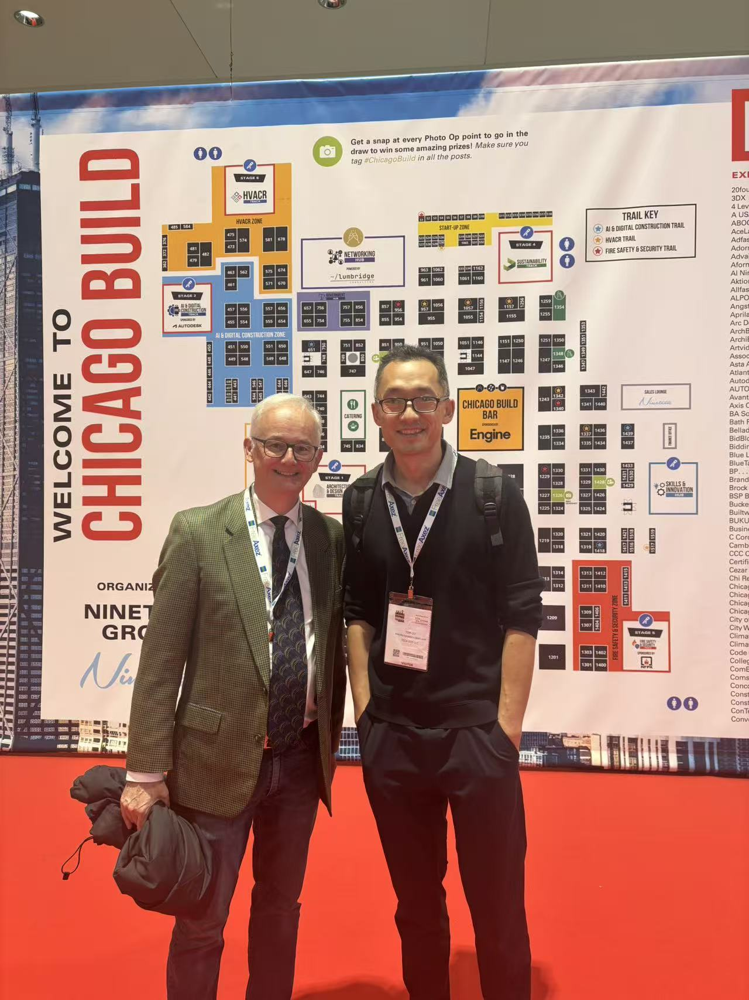

海鑫汇与芝加哥国际贸易俱乐部正式签署合作备忘录
GTN and the International Trade Club of Chicago sign an MOU to build a bridge for China–US business cooperation.
海鑫汇官方发布：海鑫汇（Gateway To New，GTN）与芝加哥国际贸易俱乐部（ITCC）正式签署合作备忘录（MOU），建立机构合作框架，共同推动中美中小企业之间的商业交流、资源连接与跨境合作。来源：海鑫汇GTN（官网）。
合作概述
近日，海鑫汇（Gateway To New，GTN）与芝加哥国际贸易俱乐部（International Trade Club of Chicago，ITCC）正式签署合作备忘录（MOU），建立机构合作框架，共同推动中国与美国中小企业之间的商业交流、资源连接与跨境合作。
连接中国企业与美国商业网络
ITCC 是扎根美国芝加哥的国际贸易商业组织，长期连接当地贸易企业及商业专业人士。通过此次合作，海鑫汇将进一步拓展北美商业网络，为中国企业了解美国市场、建立商业联系和探索国际合作提供新的渠道。
三大合作方向
01｜国际商业网络连接
促进中美企业、商业社群及专业服务机构之间的交流，推动双方商业网络互联。
02｜市场信息与知识交流
围绕国际贸易、市场环境及企业全球化发展，开展市场信息分享与专业经验交流。
03｜跨境贸易与商业合作
探索中美企业之间的贸易机会、合作伙伴关系及具体业务项目，推动商业交流向务实合作延伸。
从机构合作走向企业交流
双方将以此次合作为基础，逐步探索面向两地企业的交流活动与合作项目。
近期，双方计划围绕 ITCC 进口贸易研讨会及面向中国企业的线上交流活动开展进一步合作，帮助中国企业更直接地了解美国市场与贸易实践。
海鑫汇将持续连接中国成长型企业与国际商业网络，以新加坡为枢纽，推动产业资源、商业网络与全球市场之间的有效连接。

官方原文
本合作备忘录由 海鑫汇GTN（官网）发布。查看官方发布原文： 海鑫汇GTN 微信公众号 →
本文由 海鑫汇GTN（官网）发布，记述海鑫汇与芝加哥国际贸易俱乐部（ITCC）正式签署合作备忘录（MOU）。 查看官方原文 →